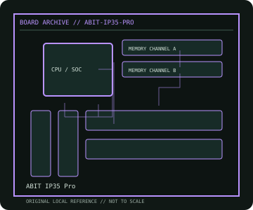

[ INDIVIDUAL COMPONENT // MOTHERBOARDS ]
ABIT IP35 Pro
Intel Core 2 enthusiast ATX platform, 2007. This record documents the named model and its documented variants; confirm the PCB revision, submodel and firmware on the physical unit.

REVISION WARNING: Similar model names and PCB revisions may have different processors, connectors or firmware. Read the silkscreen and assembly code; use the support files for that exact board variant.
Specifications
| Catalog subcategory | Legacy Intel desktop platforms |
|---|---|
| Exact model / era | ABIT IP35 Pro — Intel Core 2 enthusiast ATX platform, 2007 |
| CPU and socket / SoC | LGA775 Core 2 Quad/Duo, Pentium and Celeron families as qualified by ABIT's CPU table and BIOS |
| Chipset / platform | Intel P35 Express with ICH9R |
| Memory | Four DDR2 DIMM slots, dual-channel; capacity and speed depend on DIMM density and BIOS |
| Slots and connectivity | ATX; two PCIe x16-length slots (secondary electrical x4), one PCIe x1 and three PCI; six ICH9R SATA plus auxiliary SATA, dual Gigabit Ethernet and IEEE 1394 |
| Firmware | ABIT uGuru/Award BIOS; exact IP35 Pro and PCB revision firmware only. Preserve original BIOS image when possible. |
Compatibility and revision notes
IP35 Pro is distinct from IP35, IP35-E and IP35 Pro XE. Confirm the installed BIOS before fitting later 45 nm CPUs.
Socket, connector shape and family branding alone do not establish compatibility. Verify the exact processor list, minimum BIOS, memory population table, power input, dimensions, and shared-lane behavior in the cited manual before installation.
Preservation and repair
Inspect the CPU socket and the solid-capacitor/VRM region, northbridge cooling and auxiliary SATA controller. Archive uGuru settings; replace a failing CMOS battery only after recording RAID and fan profiles.
For archival preservation, photograph the PCB, labels, connectors and included accessories before cleaning. Record serial/date codes, firmware versions, known faults, prior repairs and test conditions; use ESD-safe handling and do not power a board with loose conductive hardware beneath it.
Sources & further reading
- ABIT IP35 Pro — user manualArchived board manual covering the model's layout, settings and connectors.
- ABIT IP35 Pro XE driver and BIOS CD archiveArchived vendor-supplied support media; the XE CD is not proof that its firmware applies to every IP35 Pro revision.
Manufacturer/model documentation is the primary reference. Where vendor support is archived, match its revision notes to the board and do not cross-flash firmware from a similar product.